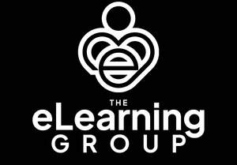

Trade Mark Journal No.2025/044 31 October 2025
UK00004280658 20 October 2025 (9,35,41,42)

- Class 9
- Training software; Downloadable educational course materials; Content management software.
- Class 35
- Providing academic course administration services relating to on-line course registration; Providing academic course administration services relating to online course registration; Providing academic course administration services for academic institutions.
- Class 41
- Distance learning courses; Distance learning services; Organisation of courses using distance learning methods; Correspondence courses, distance learning; Organisation of courses using open learning methods; Organisation of courses using programmed learning methods; Conducting distance learning instruction at the college level; Conducting distance learning instruction at the university level; Conducting distance learning instruction at the graduate level; Education, teaching and training; Conducting distance learning instruction at the secondary level; Conducting distance learning instruction at the primary level; Distance learning services provided online; Providing of training, teaching and tuition; Conducting of instructional, educational and training courses for young people and adults; Education and training; Vocational skills training; Training and instruction; Training in business skills; Life coaching (training); Training relating to employment skills; Training; Training and further training consultancy; Coaching [training]; Training courses; Vocational training; Personnel training; Training consultancy; Employment training; Training services; Education and training consultancy; Organisation of training courses; Organisation of training seminars; Organisation of training; Advanced training; Practical training; Providing of training; Providing training; Providing courses of training; Conducting training seminars; Instructional and training services; Career and vocational training; Provision of training courses; Training courses (Provision of -); Provision of training; Business training; Continuous training; Conducting workshops [training]; Training in administration; Vocational training services; Personal coaching [training]; Training and education services; Education and training services; Arranging of training courses; Adult training; Vocational training courses (Provision of -); Workshops for training purposes; Provision of training and education; Provision of education and training; Training services for personnel; Practical training services; Educational and training services; Written training courses; Personal development training; Providing online training seminars; Providing of continuous training courses; Provision of training courses in personal development; Postgraduate training courses; Production of course material distributed at professional seminars; Provision of training courses for young people in preparation for careers; Preparation of educational courses and examinations; Provision of education courses; Educational courses (Provision of -); Personal development courses; Conducting of educational courses; Provision of training courses for young people in preparation for employment; Providing on-line non-downloadable video content; Providing on-line non-downloadable audio content; Publishing of educational material.
- Class 42
- Hosting online web facilities for others for conducting interactive discussions; Hosting online facilities for conducting interactive discussions; Hosting on-line facilities for conducting interactive discussions; Hosting on-line web facilities for others for managing and sharing on-line content; Hosting multimedia educational content; Hosting of digital content; Hosting online web facilities for others for sharing online content; Hosting of transaction platforms on the internet; Interactive hosting services which allow the users to publish and share their own content and images online; Hosting of multimedia content for others; Hosting of digital content online; Platform as a service [PaaS] featuring software platforms for transmission of images, audio-visual content, video content and messages; Providing temporary use of non-downloadable software to enable content providers to track multimedia content; Hosting of digital content on the Internet; Hosting of digital content, namely, on-line journals and blogs.
Mr Jon Hocker